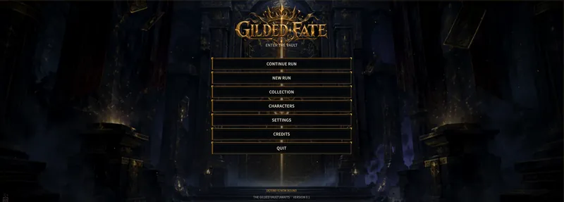

Flagship · In development Case study + gallery
Unity • C# • Game Development
2026
Gilded Fate
A dark-fantasy roguelike deckbuilder with three playable heroes, branching routes, cards, relics, status systems, controller support, and a growing presentation layer.
UnityC#Systems DesignUI/UXBalancing